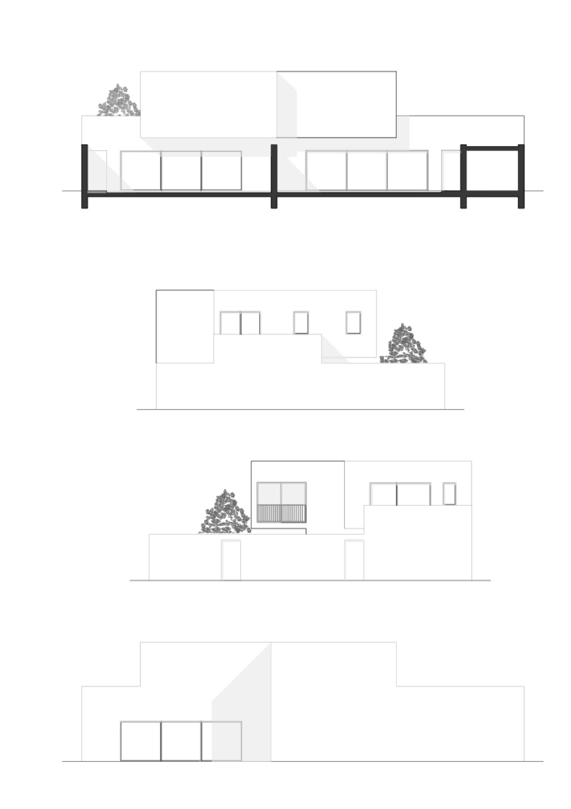
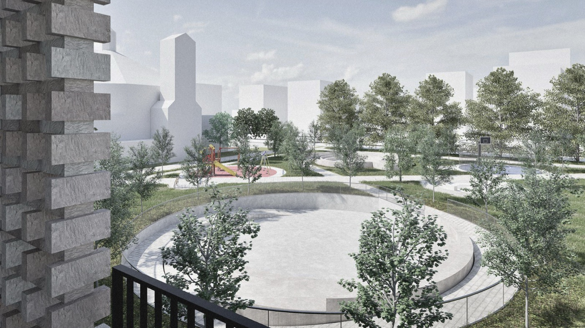
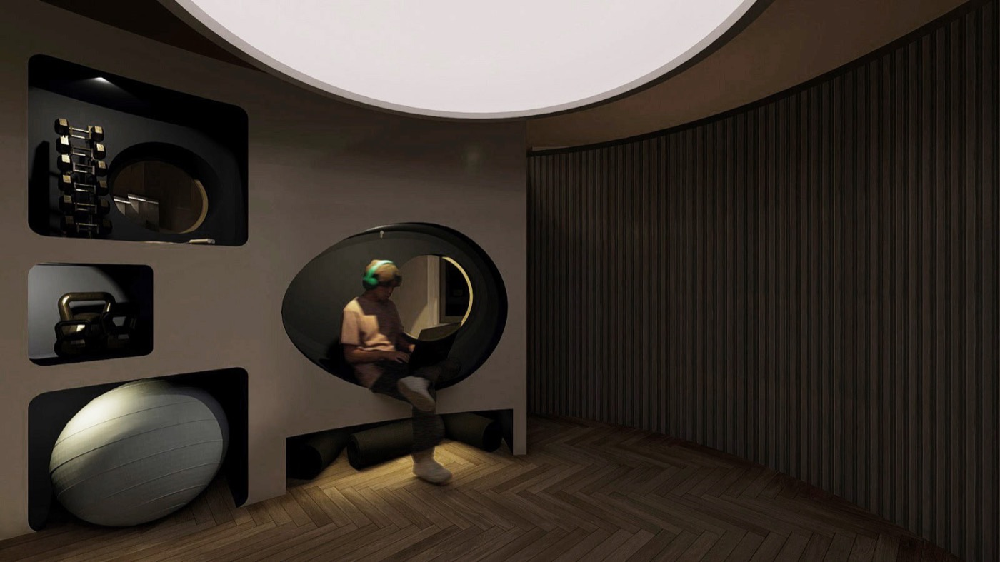
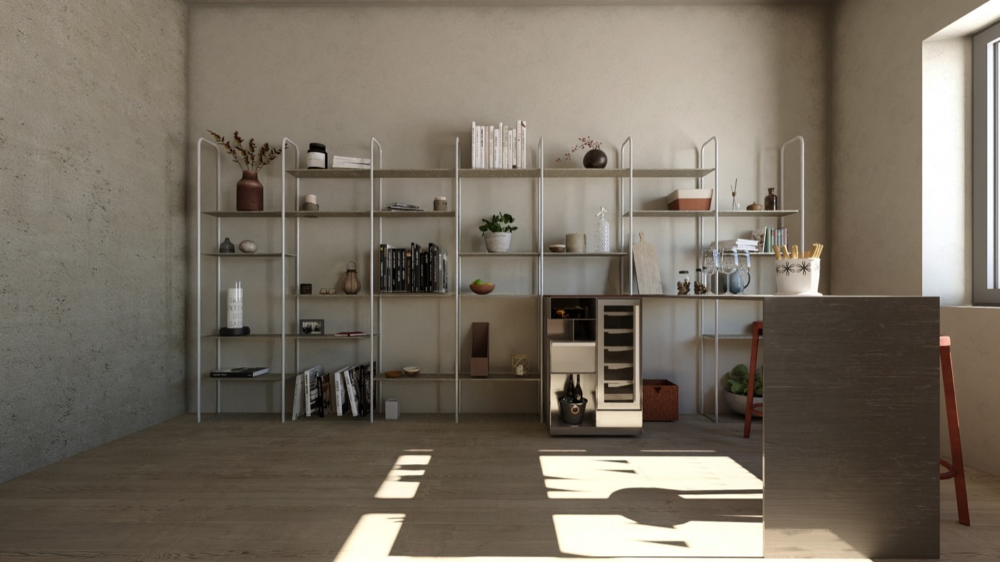
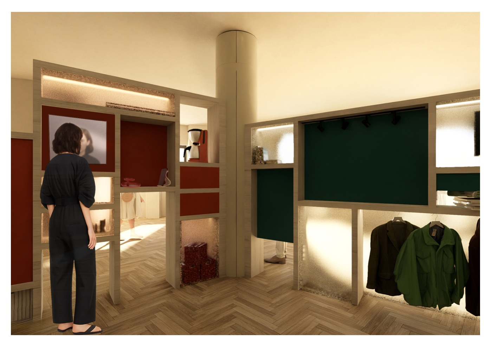

Works
Una selezione di lavori recenti tra architettura residenziale, interior design e spazi commerciali.
Residenziale · Interior Design · Commerciale · Ristrutturazione

P—001Intreccio
Laboratorio di Progettazione 1 — I anno Triennale
ResidenzialeCasa bifamiliare: le scale delle due unità si intrecciano in un unico gesto distributivo.

P—002Koinè
Laboratorio finale — III anno Triennale
ResidenzialeSocial housing nel recupero di un ex oratorio.
 P—003
P—003
Spina Abitata
Laboratorio di Costruzione — I anno Magistrale
RistrutturazioneUna nuova spina — atrio e passerella laboratoriale — per superare le barriere architettoniche di una scuola esistente.

P—004S.P.A.C.E.
Laboratorio di Interni — I anno Magistrale
Interior DesignUn dispositivo per la salute moderna dentro un'abitazione milanese.
 P—005
P—005
Padiglione
Concorso — Fuorisalone 2026
CommercialePadiglione espositivo per il Fuorisalone 2026.

P—006The IE Series
Laboratorio di Interni — I anno Magistrale
Interior DesignCucina mobile progettata sulle abitudini alimentari dei sei personaggi di Friends.
 P—007
P—007
Promenade
Laboratorio — II anno Triennale
ResidenzialeCasa vacanze in Thailandia per un'artista: una promenade a picco sul lago, pensata come un nido.

P—008On:Off Line
Laboratorio di Interni — Magistrale
Interior DesignUn dispositivo che collega smart working e hobby personali in un appartamento milanese.